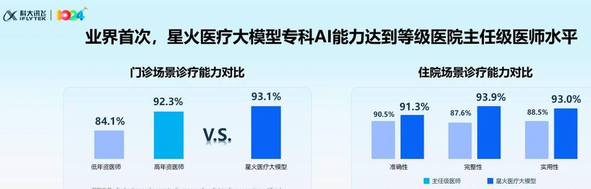
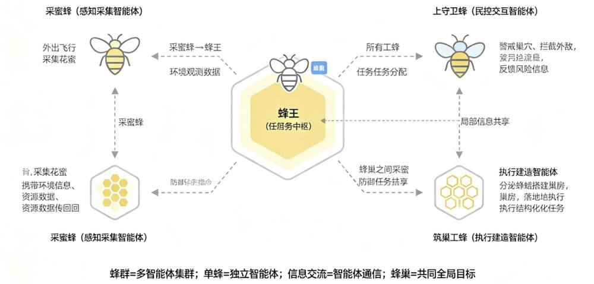
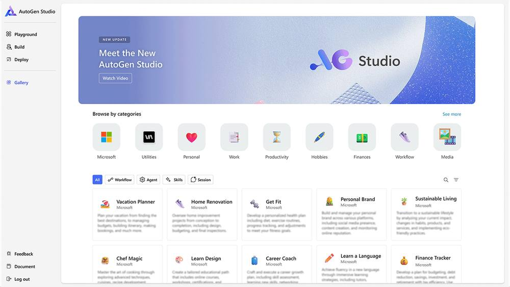
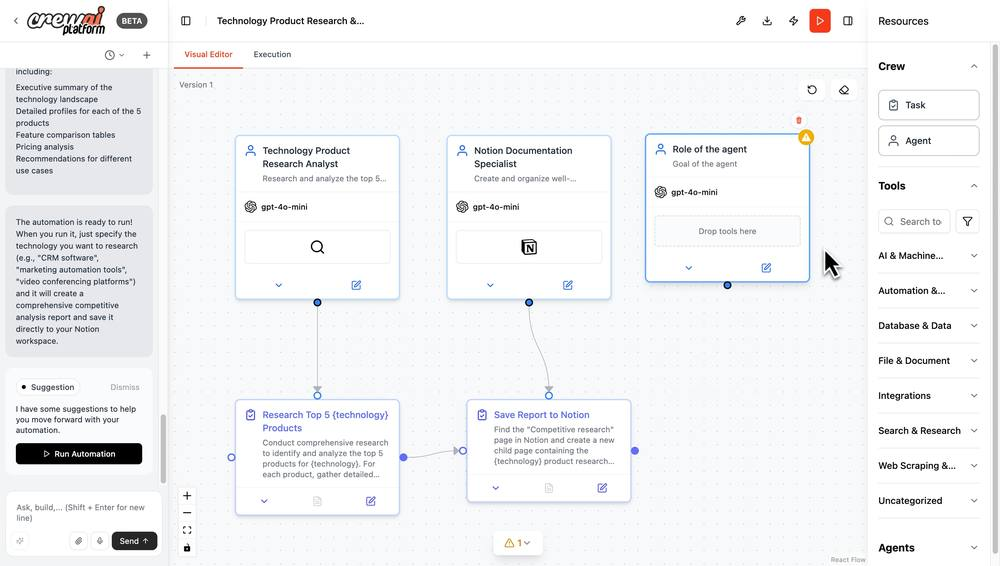
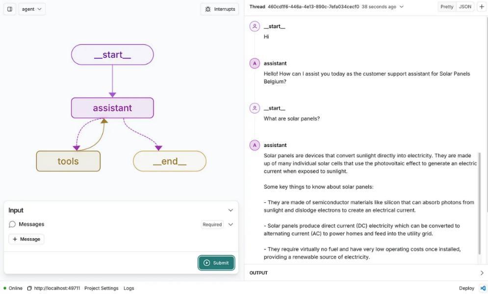
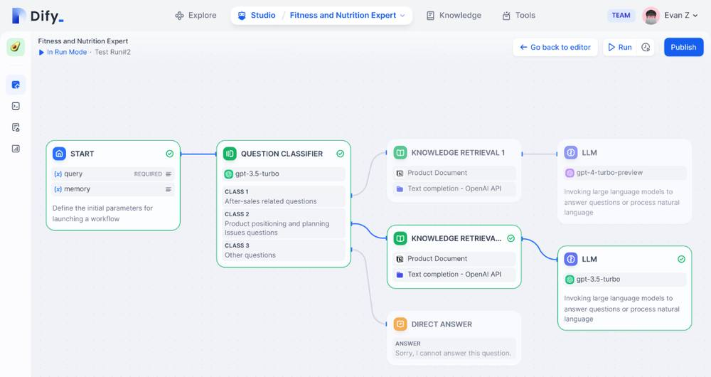

第 1 页 · 1 人工智能新技术
1 人工智能新技术

模块8：展望未来人工智能


第 2 页 · 感知智能：语音助手、图像识别已融入日常生活
感知智能：语音助手、图像识别已融入日常生活
行动智能：未来AI将拥有实体，能自主移动和执行任务
具身智能：融合感知、决策与行动的全新智能形态
2025年全球首个具身智能机器人强化学习技术在上海落地
探索三大前沿技术：多模态大模型、具身智能机器人、多智能体协作
第 3 页 · 一、多模态大模型
一、多模态大模型
能够同步处理文本、图像、视频、音频等不同类型的数据，并实现跨模态的内容理解与生成
跨模态对齐：通过在海量的跨模态配对数据（例如带有语音解说的烹饪视频、配文字说明的新闻图片）上进行训练，将文本、图像、声音等不同模态的信息映射到同一个统一语义空间

医疗大模型与主任 级医师能力对比
华为AI全屋智能解决方案
第 4 页 · 二、具身智能机器人
二、具身智能机器人
核心理念：将智能体的认知能力与物理实体相结合，实现从“感知世界”到“行动世界”的跨越，构建“感知—思考—行动“的完整闭环
关键技术：
多模态感知：视觉、听觉、触觉综合认知环境
跨模态对齐：将视觉、听觉、触觉等不同模态的信息，映射到一个统一的语义空间中，建立起不同信息之间的关联
强化学习与仿真训练：通过设计合理的奖励机制，让机器人在试错过程中自主优化行为策略；在虚拟环境中模拟各种真实世界的物理条件和突发情况，让智能体在虚拟空间中快速积累训练经验
零售场景银河通用机器人与人互动
第 5 页 · 三、多智能体协作
三、多智能体协作

现实世界中的许多复杂问题，像城市整体规划、自然灾害应急响应、大型活动统筹策划等，往往涉及多个环节、多个领域的协同配合，仅靠单个智能体难以高效完成
多智能体系统正是为解决这类复杂问题而生，它模拟自然界中常见的群体智能行为，让多个AI智能体组成协作网络，通过自主分工、实时信息共享和协同决策，形成超越单个智能体能力的集体智慧，从而高效应对复杂任务
第 6 页 · 三、多智能体协作
三、多智能体协作
微软研发的AutoGen框架，核心特点是“对话驱动协作”。

AutoGen框架
第 7 页 · 三、多智能体协作
三、多智能体协作
核心特点是“团队协作式任务流”。

CrewAI框架
第 8 页 · 三、多智能体协作
三、多智能体协作
LangChain团队推出的LangGraph框架，核心特点是“状态机式流程编排”。

LangGraph框架
第 9 页 · 三、多智能体协作
三、多智能体协作
国产开源的Dify平台，核心特点是“一站式低代码Agent开发”。

Dify平台
第 10 页 · 三、多智能体协作
三、多智能体协作
| 框架名称 | 核心特点 | 优势 | 适用场景 |
| AutoGen | 对话驱动协作 | 灵活性强 | 创意验证、快速原型 |
| CrewAI | 团队协作任务流 | 框架抽象性好 | 内容生产、流程执行 |
| LangGraph | 状态机式流程编排 | 流程编排能力极强 | 复杂业务系统 |
| Dify | 一站式低代码开发 | 上手快、中文支持强 | 企业知识助手 |
多智能体协作技术框架对比
第 11 页 · 多智能体协助的应用场景
多智能体协助的应用场景

针对多智能体协助技术，研讨其应用场景，填写下表。
| 应用场景 | 具体描述 | 产生的价值 |
| 【示例】城市交通管理 | 通过路口信号控制智能体、车辆路径规划智能体和公共交通调度智能体的协同优化交通通勤 | 实现整体通行效率的显著提升，提升社会效益，降低能耗等 |
第 12 页 · 学生分享及教师点评
学生分享及教师点评

| 评价要点 | 分值 | 计分 | 教师点评 |
| 1、应用场景的准确性与贴合度 | 20 | 场景贴合实际 | |
| 2、具体描述有深度与完整性 | 25 | 有具体的协同内容，能解决实际问题 | |
| 3、产生价值的可行性与创新性 | 20 | 富有价值，有创新应用 | |
| 4、团队协作与分工合理性 | 15 | 集思广益、团结协作 | |
| 5、是否使用AI工具 | 10 | AI赋能，人机协同 | |
| 6、其它（含逻辑、表情、主动、清晰、流畅、自信等） | 10 | 积极互动，表达流畅，自信开朗 |
第 13 页 · 子任务3：语音提示处理
子任务3：语音提示处理

学好前沿 AI
携手共创未来